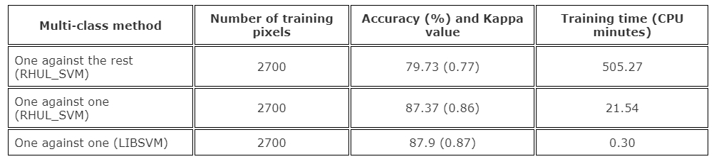

Chapter 6: Classification I - Remote Sensing Image Classification Techniques
Abstract
Classification of remote sensing imagery has greatly evolved with advancements in machine learning techniques, significantly improving the extraction of land-cover information from complex datasets. Supervised classification approaches rely on labeled training data to guide model learning, typically delivering higher classification accuracy in clearly defined scenarios. Conversely, unsupervised methods cluster imagery based solely on intrinsic spectral and spatial properties, providing initial insights and assisting in discovering unknown land-cover categories. Although unsupervised classification efficiently handles exploratory tasks, it may produce ambiguous classifications and lacks interpretability. Supervised approaches, though accurate, heavily depend on extensive, high-quality training samples challenging to collect practically.
Within supervised classification, regression trees and random forests have become particularly effective due to their robustness, interpretability, and predictive power. Regression trees partition data recursively into homogeneous subsets using straightforward decision rules, making them highly interpretable yet prone to overfitting. Random forests overcome this limitation using an ensemble of regression trees trained on bootstrapped samples and random subsets of variables. Aggregating predictions from multiple trees significantly reduces model variance and mitigates overfitting, enhancing generalization performance.
Fig 1.1 Source:Rosaria Silipo

Fig 1.2 Source:Drew Wilimitis
Effective classification accuracy assessments typically employ error matrices and metrics such as Producer’s Accuracy (PA), User’s Accuracy (UA), Overall Accuracy (OA), and Kappa statistics, collectively providing quantitative measures of classification reliability.
Application
In practical remote sensing image classification, regression trees and random forests have seen extensive application in diverse fields such as forestry, agriculture, and urban studies. Belgiu and Drăguţ (2016) effectively employed random forests in mapping agricultural landscapes, demonstrating superior accuracy compared to traditional classifiers due to their robustness against noise and reduced overfitting. Their workflow involved selecting relevant predictor variables, training multiple regression trees on bootstrapped samples, and aggregating results via majority voting, significantly enhancing classification accuracy.
Similarly, Pal (2005) illustrated the effective use of Support Vector Machines (SVM) for urban land-cover classification, highlighting SVM’s capability in handling complex, high-dimensional spectral data. Systematic kernel selection and parameter optimization through cross-validation demonstrated SVM’s superior accuracy and generalization abilities compared to conventional classifiers. Fig 2.1 Classification accuracy and training time using SVMs and different multi‐class methods with Littleport ETM+ data.
Fig 2.2 Variation in classification accuracy with increasing number of features and fixed training dataset.
These methodologies collectively enhance the precision and applicability of remote sensing data classification across ecological, agricultural, and urban management scenarios.
Reflection
Despite significant advances in remote sensing classification methods, practical implementation remains challenging due to methodological and data-related constraints. Regression trees and random forests, though robust, require careful parameter selection, such as the number of trees and split criteria, to avoid overfitting or underfitting. Overfitting remains critical, especially for regression trees, necessitating comprehensive validation strategies such as spatial cross-validation or independent test datasets to ensure reliability.
Support Vector Machines, although powerful, face challenges related to computational efficiency and parameter optimization. Selecting the appropriate kernel and hyperparameters can be difficult without extensive experience or computational resources, limiting SVM accessibility for operational users and policymakers requiring quick, interpretable results.
Supervised methods also depend strongly on high-quality training datasets, which are costly and time-consuming to obtain. Combining supervised methods with unsupervised approaches can mitigate this by identifying unknown land-cover categories, guiding training-data selection, and reducing reliance on expensive labeled datasets.
Emerging technological innovations like deep learning—particularly Convolutional Neural Networks (CNN)—could further address these limitations by automating feature extraction and minimizing manual parameter tuning. Cloud computing and automated hyperparameter tuning methods also promise streamlined workflows. Such innovations, along with advanced sensor technologies like hyperspectral and very high-resolution imagery, may significantly enhance remote sensing classification accuracy, interpretability, and practical applicability, facilitating broader policy integration and operational decision-making.
References
Belgiu, M., & Drăguţ, L. (2016). Random forest in remote sensing: A review. ISPRS Journal of Photogrammetry and Remote Sensing, 114, 24-31.
Pal, M. (2005). Support vector machines for classification in remote sensing. International Journal of Remote Sensing, 26(5), 1007-1011.
Lu, D., & Weng, Q. (2007). Survey of image classification methods. International Journal of Remote Sensing, 28(5), 823-870.
Jensen, J. R. (2015). Introductory Digital Image Processing: A Remote Sensing Perspective (4th ed.). Pearson Education.